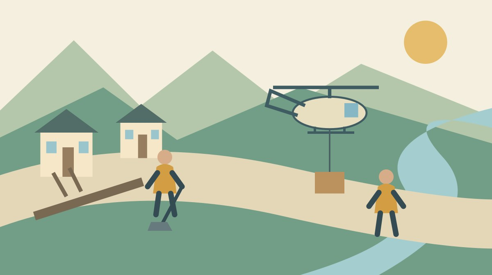

森町の防災訓練2026｜地区別会場を比較

Q. 11月15日の森町の防災訓練は、どの会場を見ればいい？
A. 2026年11月15日の見学可能な訓練は、午前9時〜11時30分が目安です。道路啓開は役場北館、ペット同行避難は森小学校、給水車は旭が丘中学校、航空輸送は旧三倉小学校が案内されています。自宅で気になる備えを一つ選び、会場と指定駐車場を確認してください。
見学する前に、家族の疑問を一つ選ぶ
森町の防災訓練は、町職員だけでなく、自主防災会、消防、事業者などが時間と設備を持ち寄って行います。訓練を見学する側も、現場を動かす人の仕事を妨げずに学ぶ姿勢が必要です。全部の会場を回るより、自分の家で気になることを一つ持って出かける方法があります。
私、大石浩之（磐田市／不動産業）は、家の備えを考えるとき、建物の中と家までの道を分けて見ます。室内の物を備えていても、道路が使えない場合の移動や物資の受取りは別に残ります。訓練の会場表は、こうした疑問を具体的な作業に結び付ける入口になります。
この記事では、2026年11月15日に実施される「静岡県・磐田市・袋井市・森町総合防災訓練」の森町内の見学会場を比較します。情報を確認したのは2026年10月23日です。通常の避難先選びや、自宅の安全性を判定する記事とは目的を分けています。
今日できることは、家族で「道が塞がれたら」「避難先の設備は」「物資はどう届くか」のうち一つを選ぶことです。その疑問に近い訓練会場と駐車場を一組で記します。見たい設備を先に決めると、当日の移動に使える時間も考えやすくなります。
日時と見学できる範囲を読み分ける
森町公式の案内は2026年10月21日更新です。開催日は令和8年11月15日（日曜日）。見学ができる訓練の時間は午前9時〜午前11時30分で、おおよその目安と明記されています。すべての作業が午前9時に同時に始まる、と読み替えないでください。
公式表は「見学ができる訓練」と「その他実施する訓練」を分けています。後者には災害対策本部、罹災証明、住家被害確認、救護病院の運営などの項目があります。名称が載っているだけで、一般の人が自由に見学できるとは案内されていません。
見学可能として掲載された場所は、役場北館駐車場、森小学校、旭が丘中学校、旧三倉小学校グラウンドです。森小学校と旭が丘中学校は同じ欄にまとめられていますが、両校で行う内容には違いがあります。会場の数と表の行数を同じものとして数えないようにします。
私は、開始時刻だけをメモするより、見学できる枠の名称も一緒に残す方がよいと考えます。家族から「役場の訓練も見られるのか」と聞かれたときに、役場北館駐車場の案内と役場内の別業務を混ぜずに説明できます。場所の呼び方を省略しすぎない準備です。
会場を比べる｜道路、生活設備、航空輸送
役場北館駐車場は、周智高校跡地と併記されています。ここでは倒壊した電柱や土砂の撤去による道路啓開、倒壊家屋からの救出・救助、災害用車両と啓発ブースの展示出展を行います。道路を再び使うための作業に関心がある人が、内容を確認できる会場です。
森小学校と旭が丘中学校では、間仕切りテントと簡易ベッド、仮設トイレとパック式トイレの設置を予定しています。浄水器の使用、支援物資の受入れも共通の欄に記載されています。避難先で生活するために何を準備するのかを、設備から考える機会になります。
給水車による給水訓練は旭が丘中学校のみ、ペット同行避難訓練は森小学校のみと明記されています。同じ表の欄だから内容も同じだと思うと、見たい訓練を取り違えます。水の受取りを見たい家族と、ペット同行避難を知りたい家族では、選ぶ会場が異なります。
旧三倉小学校グラウンドでは、ヘリポート開設、航空輸送、ドローンと無人ヘリコプターによる物資輸送を予定しています。参加団体には森町、自主防災会、県、自衛隊、静岡県警、森町消防団、ヤマハ発動機が掲載されています。道路以外から物資を届ける訓練です。
| 会場 | 内容の特徴 | 駐車場 |
|---|---|---|
| 役場北館駐車場 | 道路啓開・救出救助 | 森アリーナ |
| 森小学校 | 生活設備・ペット同行避難 | 森アリーナ |
| 旭が丘中学校 | 生活設備・給水車 | 同校グラウンド |
| 旧三倉小学校グラウンド | ヘリポート・航空輸送 | 三倉茶農業協同組合製茶加工場 |
私は、三倉の会場を単に「珍しい機体が見られる場所」として紹介したくありません。離着陸する場所を整え、物資を受け渡す人がいて、輸送が一つの作業になります。機体の有無と、家族へ必要な物が届くまでの段取りを分けて見ることに意味があります。
良い点｜地区ごとの備えを具体的に見られる
今回の公式案内の良い点は、訓練内容、会場、参加団体を対応させて示していることです。「防災訓練」という言葉だけでは分からない仕事を確認できます。どの会場で何を見たいかを先に選べるため、短時間の見学でも目的を絞れる形になっています。
私は、道路の復旧と避難生活の設備を並べて考えられる点を評価します。道が通ればすべて解決するわけでも、物資を備えれば移動を考えなくてよいわけでもありません。家族の暮らしを支える作業が複数あると知ることは、家の備えを見直す材料になります。
駐車場を会場と別の表で案内している点も実務的です。見学場所へそのまま車を入れる前提を避けられます。出発前に家族へ駐車先を渡せば、現場で訓練に参加している人へ車の置き場を尋ねる回数も減らせます。案内を読むこと自体が協力の一つです。
山間部での移動を考える場合は、三倉・天方の移動の代替を考える記事が関連します。日常の代替交通と災害時の輸送は同じ仕組みではありません。今回の訓練では、日常の足が使えない場合にどの作業が必要か、という別の問いを持てます。
注文したい点｜見学の先の行動につなげたい
訓練の実施案内からは、個々の作業の詳細な開始順や、見学者の移動経路までは確定できません。公式に示された時間も目安です。複数会場を短い間隔で移動する計画を、この表だけで組むのは避けた方がよいと私は考えます。
私は、見学者が帰宅後に一つ確認できる資料へつながると、訓練の価値が残りやすいと思います。簡易ベッドを見た家族なら、自宅にある寝具や避難時の持出しを確認する。輸送を見た家族なら、物資を受け取るまでの連絡方法を考える。その橋渡しが欲しいところです。
ただし、見学者向けの説明を増やせば、参加者の訓練時間を圧迫するかもしれません。どこまで案内を求めてよいのか、私は迷います。住民が学ぶ時間と、現場が実際に動いて手順を確かめる時間の両方を大切にしたいので、見学中の質問は進行を見て行いたいです。
今日の対処は、質問を紙に一つ書いて持つことです。担当者が説明できる場面に限って尋ね、回答できる人がいなければ持ち帰ります。答えを得るために作業区域へ近づいたり、誘導の外へ出たりする必要はありません。見学の目的を一つに絞る利点がここにもあります。
駐車場を会場と一組で記録する
役場北館駐車場と森小学校の見学者用駐車場は、公式表で森アリーナと指定されています。会場名に「駐車場」とあるからといって、役場北館駐車場を来場者が利用できるわけではありません。訓練する場所と車を置く場所が異なる点は、見落としやすい事実です。
旭が丘中学校の駐車場は同校グラウンドです。旧三倉小学校グラウンドの会場には、三倉茶農業協同組合製茶加工場が駐車場として案内されています。どちらも名称をそのまま家族の予定表に記し、短く省略した呼び名だけで合流しないようにします。
公式表には、駐車先から会場までの徒歩時間や段差の詳しい説明はありません。歩行に条件があるご家族は、その部分を確認してから会場を選んでください。私は、駐車先が決まったことと、同行者が無理なく歩けることを別の欄で管理する方法がよいと考えます。
来場経路の確認には、森町の通行止め情報を調べる記事も使えます。訓練の開催案内は、家から会場までの全道路が通れるという情報ではありません。普段と違う道を使う場合も、県道か町道かを区別して最新の案内を確認します。
訓練会場と、自宅の避難先を混ぜない
今回のページは訓練の会場を案内したものです。家族が災害時に向かう避難先を個別に決める資料ではありません。見学した学校が近いからという理由だけで、自宅からの避難先や経路を確定しないでください。災害の種類と、その時点の町の案内を確認する必要があります。
訓練で航空輸送を行うことも、災害時にどの家へいつ物資が届くかの保証ではありません。今回の案内には、個別世帯への配送条件や所要時間は示されていません。訓練の存在を安心の材料にしつつ、家庭の備えを省く根拠にはしないという読み方です。
避難行動については、土砂災害と家族の合流を扱う記事と分けて確認します。この記事の会場比較で分かることは、当日どの訓練を見られるかです。家の立地、避難情報、開設状況を確かめる作業は、見学後も別に残ります。
私は、見学の記録に「見たこと」と「自宅で確認すること」を二列で書く方法を勧めます。例えば、テントの設置を見たという記録と、自分の家族が使える場所を確認したという記録は異なります。見た設備を、自分の家庭にも必ず用意される設備と取り違えないためです。
対案・結論｜一会場、一つの問いで出かける
森町の総合防災訓練を見学する準備は、家族の疑問に合う会場を一つ選ぶことで始められます。道の復旧なら北館、ペット同行避難なら森小学校、給水車なら旭が丘中学校、航空輸送なら旧三倉小学校という対応を、公式表で確認します。
予定表には会場、駐車場、見たい内容、確認日を一緒に記します。午前9時〜11時30分は目安と添え、細かな時間が未確認なら空欄を残します。訪問する直前に公式ページを再確認し、変更の有無を見てから出発してください。
見学中は、機材や作業に近づくより、誘導された場所から流れを見ます。家族が気付いた疑問を一つ残せば、帰宅後の確認材料になります。写真撮影やペットの同伴など、今回の本文から条件を確認できない行動は、できると決めつけず主催者の案内に従います。
帰宅後の作業は一つで構いません。持出し品の置き場所を家族で共有する、連絡先を紙に残す、避難先の確認ページを開く。何をしたかの日付を付ければ、見学が感想だけで終わらず家庭の記録になります。次の家族が見直す際も、出発点が分かります。
大石の視点｜家と道を切り離して考えない
家の備えは敷地の中だけで完結しない、と私は考えます。道路を使う人、設備を運ぶ人、物資を受け入れる人がいて、暮らしがつながります。今回の会場表を読むと、そのつながりを異なる場所で訓練する構成が分かります。地区の優劣を付けるための比較ではありません。
私は、今回の訓練を実際に見た経験として書いてはいません。家と移動を扱う不動産業者としての意見です。家の状態を調べるときに接道を確かめるように、防災でも家の外の動きまで見る。その見方を、ご家族が一つの会場で試す機会にできればと考えています。
見学できなければ備えが進まないわけでもありません。公式表を家族で読み、何が分からないかを一つ見つけるだけでも作業は始まります。地域の訓練に全部を任せず、家庭で確認できることを一つ引き取る。その分担なら、支える人の時間も家族の暮らしも尊重できます。
よくある質問
利用前に確認したい疑問を、公式案内の範囲で整理します。
見学できる時間は何時からですか？
森町の案内では2026年11月15日、午前9時〜11時30分がおおよその目安です。個々の作業が同時に始まる保証ではありません。「その他実施する訓練」は見学可能な訓練と別枠です。行きたい会場と見たい内容を公式表で照合し、直前の変更も確認してください。細かな進行時刻が分からないまま複数会場を詰め込む予定は避けます。
会場にそのまま車を停められますか？
会場ごとに指定が異なります。役場北館駐車場と森小学校は森アリーナ、旭が丘中学校は同校グラウンド、旧三倉小学校は三倉茶農業協同組合製茶加工場が案内されています。会場名に駐車場とあっても来場者用とは限りません。徒歩経路や段差は別に確認し、当日は現地の誘導に従ってください。
訓練会場は災害時の避難先と同じですか？
訓練会場の一覧だけでは、自宅の災害時の避難先を決められません。今回の案内は見学する訓練の場所を示すものです。実際の避難では災害の種類、自宅の立地、避難情報、施設の開設状況を確認します。訓練で航空輸送を実施することも、個別の家への輸送を保証しません。見学した内容と家庭の備えを分けて記録してください。
会場への交通を確認する入口
森町公式の公共交通ページは、町営バス、地域タクシー、鉄道などの案内を分けています。鉄道・民間路線バス・タクシーのリンク集には、各運行主体の時刻表や路線図への入口があります。訓練日に会場へ行ける便があるかは、利用する交通ごとに確認してください。
私は、車以外で向かう場合も、最寄りの停留所と会場の距離だけで参加を決めない方がよいと考えます。日曜日の運行と帰りの時刻、歩く区間を合わせて確認します。今回の案内から、見学者用の送迎バスがあるとは確認できません。必要な移動条件を一つずつそろえる準備になります。
公式情報源
以下の一次情報を2026年10月確認。本文確認日：2026年10月23日。
制度・運行・開催条件・数値は変わる場合があります。利用直前に公式情報を確認してください。個別の利用条件は運行主体・主催者へ、専門的な判断は担当窓口や専門家へご相談ください。